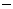

![[Front]](images/OpenGL3.gif)
![[Reference]](../buttons/ReferenceOff.gif)
![[Index]](../buttons/IndexOff.gif) gluDisk: draw a disk.
gluDisk: draw a disk.
C Specification |
Parameters |
Description |
See Also
void gluDisk(
GLUquadric* quad,
GLdouble inner,
GLdouble outer,
GLint slices,
GLint loops)
- quad
- Specifies the quadrics object (created with gluNewQuadric).
- inner
- Specifies the inner radius of the disk (may be 0).
- outer
- Specifies the outer radius of the disk.
- slices
- Specifies the number of subdivisions around the z axis.
- loops
- Specifies the number of concentric rings about the origin into which the
disk is subdivided.
gluDisk renders a disk on the z = 0 plane. The disk
has a radius of outer, and contains a concentric circular hole
with a radius of inner. If inner is 0, then no
hole is generated. The disk is subdivided around the Z axis into slices (like
pizza slices), and also about the Z axis into rings (as specified by
slices and loops, respectively).
With respect to orientation, the +z side of the disk is
considered to be "outside" (see gluQuadricOrientation). This
means that if the orientation is set to GLU_OUTSIDE, then any
normals generated point along the +Z axis. Otherwise, they point along the
Z axis.
If texturing has been turned on (with gluQuadricTexture), texture
coordinates are generated linearly such that where r =
outer, the value at (r, 0, 0) is
(1, 0.5), at (0, r, 0) it is (0.5,
1), at (r, 0,
0) it is (0, 0.5), and at (0, r, 0) it is (0.5,
0).
gluCylinder,
gluNewQuadric,
gluPartialDisk,
gluQuadricOrientation,
gluQuadricTexture,
gluSphere
![[Prev]](buttons/ArrowLeftOff.gif)
![[Next]](buttons/ArrowRightOff.gif)
![[Up]](buttons/ArrowUpOff.gif) C Specification
C Specification